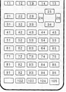

| HOME >> Tutorials >> Tutorial 21: Reading Keypress |
Introduction:
This tutorial is going to be the beginning for you to be able to make bigger and better games because of one command. This command can do so many things and that's why I had to separate it into three tutorials, otherwise there would have been one long one. This specific tutorial, however, just shows you basic uses of it. This is basically what is covered in the Guidebook that you receive when you get your calculator. On the other hand, the next two tutorials contain tricks that I have seen and use in games.
New Command:
| getKey | Returns the key code for the current keypress |
|  |
The Codes:
Let me just explain a couple of things before we get started on the codes. There's one big disadvantage with using getKey. The command, getKey, does not wait for a key to be pressed, but checks to see what key was pressed exactly when the program executes that command line. If a key is pressed a second earlier or later, it won't read it and it'll go on to the next lines of code. You may be thinking, "then why do you have 3 tutorials on it?" There is a way to make the command wait for a keypress. What you have to do is put the command inside a loop that repeats itself until a key is pressed. The first code will be a program that just displays the key code for the key that was pressed. You might not understand half of this code, but try to absorb as much as you can and I'll give an explanation after.
| : | For AShell, SOS, and TI-Explorer |
| ClrHome | Clears the home screen |
| While 1 | |
| getKey |
Stores the key's key code into user variable G |
| While G=0 | This is used to make getKey wait for a keypress |
| getKey |
Stores the key's key code into user variable G |
| End | End of the second While loop |
| Disp G | Displays the key's key code on the screen |
| End | End of the initial While loop |
Possible output:
Keys Pressed:
 ,
,
 ,
,
,
,
,
,
 ,
,
 , and
, and

Further Explanation:
I purposely put this program in a continuous loop so that you could read the key code of every key. The only way that you can break program execution is by pressing the  key and choosing 1:Quit. You should definitely understand the first two lines of code and the line that says "Disp G." If you can think back to Tutorial 10: More Loops (you can quickly look back if you want), you should be able to understand the three lines of code starting with "While G=0." If you don't, here's a quick explanation: As it also says in the definition of getKey, when no key has been pressed, getKey returns 0, which is then stored into G. The While loop is just continuing to repeat itself and during the time between each keypress, getKey is returning 0. That's why it says "While G=0." When a key is pressed, that While loop ends and then the next command line displays G, which is the key's key code. After displaying the key code, the program goes back to the "While 1" command line (I'll explain that shortly) and does everything after it all over again. Let me tell you that this all happens very quickly. That's why you can press two keys almost simultaneously and get two different key codes. You only need those three lines starting with "While G=0," when you're displaying the getKey codes. This is because it would continually display 0 until a key is pressed, and then it would display that key's keycode. Try it and see. Take out those three lines and see what the program does. Generally, for all other programs, you don't need those three lines, just when you want to display the getKey keycode. All you need is the "While 1" part. All that's left to explain are the two lines starting with "While 1." I wish I could give you a good explanation for this, but I cannot because I don't truly know how that works; I just know it does. The "While 1" acts like a continual loop; it just does everything between it and it's corresponding "End" repeatedly unless the program is broken by the user. I've just found out that any number works after that While loop. You could put "23323" and the program would work just the same. The last line of code to explain is the "getKey
key and choosing 1:Quit. You should definitely understand the first two lines of code and the line that says "Disp G." If you can think back to Tutorial 10: More Loops (you can quickly look back if you want), you should be able to understand the three lines of code starting with "While G=0." If you don't, here's a quick explanation: As it also says in the definition of getKey, when no key has been pressed, getKey returns 0, which is then stored into G. The While loop is just continuing to repeat itself and during the time between each keypress, getKey is returning 0. That's why it says "While G=0." When a key is pressed, that While loop ends and then the next command line displays G, which is the key's key code. After displaying the key code, the program goes back to the "While 1" command line (I'll explain that shortly) and does everything after it all over again. Let me tell you that this all happens very quickly. That's why you can press two keys almost simultaneously and get two different key codes. You only need those three lines starting with "While G=0," when you're displaying the getKey codes. This is because it would continually display 0 until a key is pressed, and then it would display that key's keycode. Try it and see. Take out those three lines and see what the program does. Generally, for all other programs, you don't need those three lines, just when you want to display the getKey keycode. All you need is the "While 1" part. All that's left to explain are the two lines starting with "While 1." I wish I could give you a good explanation for this, but I cannot because I don't truly know how that works; I just know it does. The "While 1" acts like a continual loop; it just does everything between it and it's corresponding "End" repeatedly unless the program is broken by the user. I've just found out that any number works after that While loop. You could put "23323" and the program would work just the same. The last line of code to explain is the "getKey G" command line that's between the While loops. You may be thinking, "why do you need to put that there...it's unnecessary." Well, I agree with you, but it is very necessary. If you do not put that command line there, the program does not work, and I do not know why. As you probably already know, getKey is generally used for games so that the user can move objects around on the screen and so that keys on the calculator can serve functions other than what they are normally used for. Such an example is using
G" command line that's between the While loops. You may be thinking, "why do you need to put that there...it's unnecessary." Well, I agree with you, but it is very necessary. If you do not put that command line there, the program does not work, and I do not know why. As you probably already know, getKey is generally used for games so that the user can move objects around on the screen and so that keys on the calculator can serve functions other than what they are normally used for. Such an example is using  to start a game, to quit a game,
to start a game, to quit a game,  to go to the Home screen of the game, and
to go to the Home screen of the game, and  to save your place in the game. In the next code, I'll show you how that's done.
to save your place in the game. In the next code, I'll show you how that's done.
| : | For AShell, SOS, and TI-Explorer |
| While 1 | |
| ClrHome | Clears the home screen |
| getKey |
Stores the key's key code into user variable G |
| If G=21 | If |
| Output(4,3,"GAME STARTED | Output on the screen "GAME STARTED" |
| If G=22:Stop | If is pressed, end program execution |
| If G=11:Output(4,7,"HOME | If |
| If G=33 | If the |
| Output(4,4,"GAME SAVED | Display "GAME SAVED" |
| For(A,1,200 | This line and the next are used to make the text |
| End | stay up for a while before the screen is cleared |
| End | End of the initial While loop |
All possible outputs:
press  or press
or press 
OR
press  or press
or press 
You should be able to fully understand this code, but I do want to say a few things. The reason that I separated the first and the last If statements into two lines is just because of space. There wasn't enough space to fit the If statements and what it should do on the same line, so I just separated them each into two lines. I recommend that you put them on one line in your program because that is the way I normally would do it. The beauty of the "While 1" is that you do not need an Else command (did you notice that?). If a key is pressed and it's not one of the four listed, none of those If statements are true, and it just goes back up to the "While 1" and starts all over again. The last code is a revised form of a code that we have previously used before. This program uses randInt and displays words in random places on the screen.
| : | For AShell, SOS, and TI-Explorer |
| Lbl 1 | |
| Repeat getKey=63 | Repeats until a special key is pressed |
| ClrHome | Clears the home screen |
| randInt(1,8) |
Picks a random integer between 1 and 8 |
| randInt(1,12) |
Picks a random integer between 1 and 12 |
| Output(A,B,"HELLO") | Displays "HELLO" in a random spot |
| For(X,1,100) | This construction is used so that we will be |
| End | able to see "HELLO" for a short while |
| End | End of the Repeat loop |
Possible output:

We had this same code in Tutorial 11, but it just continuosly looped around until the user pressed  because we did not know about getKey back then. Now, the program displays "HELLO" in random places until a special key is pressed. Do you know what key that is? Do not scroll up and look up the key code. Run the program and press all the buttons until you find out which one stops it.
because we did not know about getKey back then. Now, the program displays "HELLO" in random places until a special key is pressed. Do you know what key that is? Do not scroll up and look up the key code. Run the program and press all the buttons until you find out which one stops it.
Conclusion:
Do you now see why I had to break the tutorial on getKey up into three tutorials? What we have gone over in this tutorial is just the basics; these are the regular uses of getKey. You can use getKey to do much cooler things, which I will show you in the next tutorial and the one after that. There is still far more exciting programs yet to come!
If you do not understand a particular part in this lesson, have suggestions, or find any problems please contact me.
 |
 |
| Tutorial 20 | Tutorial 22 |